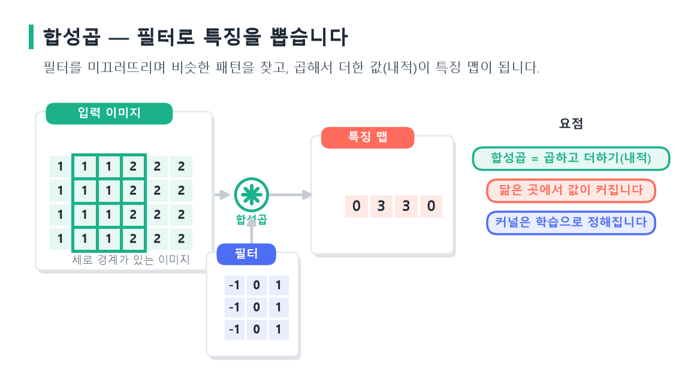
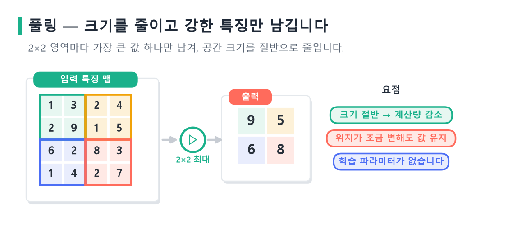
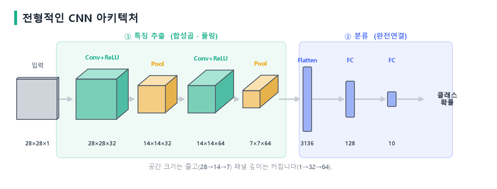
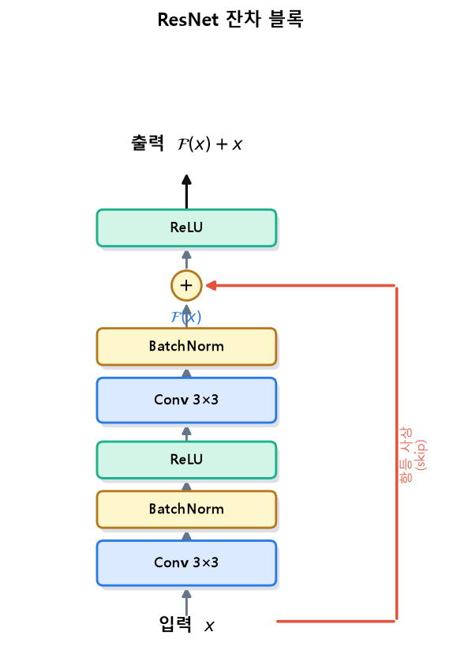
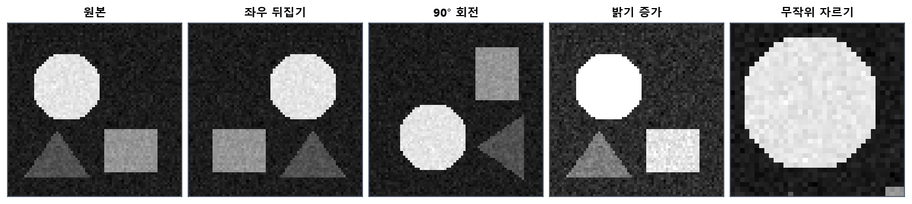

flowchart LR
IMG["이미지 (2D 격자)"] --> FLAT["1차원으로 펼침"]
FLAT --> P1["파라미터 폭발"]
FLAT --> P2["공간 구조 소실"]
P1 --> NEED["→ 합성곱 신경망 필요"]
P2 --> NEED
style NEED fill:#bbf7d0
13 CNN 기반 이미지 분류와 전이학습
이 장은 이미지를 다루는 대표적 신경망인 합성곱 신경망(CNN)을 깊이 있게 살펴봅니다. 먼저 완전연결망이 이미지에 왜 부적합한지에서 출발해, 합성곱 연산과 풀링의 원리를 수식과 그림으로 이해합니다. 이어서 지역 연결·파라미터 공유·이동 등변성이라는 CNN의 핵심 원리를 정리하고, LeNet부터 ResNet까지 대표 아키텍처의 발전을 따라갑니다. 마지막으로 사전학습 모델을 재활용하는 전이학습의 원리와 전략을 다룹니다.
13.1 이미지 데이터와 완전연결망의 한계
이미지는 픽셀들이 격자 형태로 배열된 데이터입니다. 흑백 이미지는 각 픽셀이 하나의 밝기 값을 갖는 \(H\times W\) 격자이고, 컬러 이미지는 보통 높이 \(H\), 너비 \(W\), 그리고 빨강·초록·파랑 세 개의 채널(channel)로 이루어진 \(H\times W\times 3\) 텐서로 표현됩니다. 각 픽셀 값은 해당 위치·채널의 밝기를 나타내며, 보통 0에서 255 사이의 정수이거나 0에서 1 사이로 정규화된 실수입니다.
한 가지 유의할 점은, 파이토치는 이미지 텐서를 관례적으로 채널을 앞에 두는 \((C, H, W)\) 순서로 다룬다는 것입니다. 배치까지 포함하면 \((N, C, H, W)\) 형태가 되며, nn.Conv2d를 비롯한 이미지 관련 모듈이 모두 이 순서를 가정합니다. 반면 이미지를 화면에 그리는 라이브러리들은 \((H, W, C)\) 순서를 쓰는 경우가 많아, 둘을 오갈 때 축 순서를 맞춰 주어야 합니다.
앞 장들에서 쓴 완전연결망(MLP)을 이미지에 그대로 적용하려면, 2차원 이미지를 1차원 벡터로 펼쳐 입력해야 합니다. 그런데 이 방식에는 두 가지 치명적 문제가 있습니다.
첫째, 파라미터가 폭발적으로 늘어납니다. 예를 들어 \(224\times224\times3\) 컬러 이미지를 펼치면 입력이 약 15만 차원이 되고, 은닉 뉴런이 1,000개인 층 하나만 연결해도 약 1억 5천만 개의 가중치가 필요합니다. 층을 쌓으면 파라미터는 감당하기 어려울 만큼 커지고, 이는 과적합과 막대한 연산을 부릅니다.
둘째, 공간 구조를 무시합니다. 이미지를 1차원으로 펼치면 서로 인접한 픽셀이 멀리 떨어지게 되어, “가까운 픽셀끼리 강하게 연관된다”는 이미지의 본질적 성질이 사라집니다. 또한 물체가 이미지 안에서 조금만 이동해도 완전연결망은 전혀 다른 입력으로 인식합니다. 고양이가 왼쪽에 있든 오른쪽에 있든 고양이인데, 완전연결망은 이를 스스로 알지 못합니다.
합성곱 신경망은 이 두 문제를 지역 연결과 파라미터 공유로 해결합니다. 그 뿌리는 시각 피질의 정보 처리를 모방한 후쿠시마의 네오코그니트론까지 거슬러 올라가며(Fukushima, 1980), 르쿤 등이 오차 역전파로 학습 가능한 형태로 정립했습니다(LeCun 기타, 1989; LeCun 기타, 1998). 흥미롭게도 이 아이디어는 생물학적 시각 시스템에서 영감을 받았습니다. 동물의 시각 피질에는 화면의 특정 위치·방향에 반응하는 세포들이 있고, 이들이 계층적으로 조직되어 단순한 자극에서 복잡한 형태로 정보를 통합합니다. CNN의 지역 수용 영역과 계층적 특징 구성은 이러한 생물학적 구조를 공학적으로 재현한 것이라 볼 수 있습니다.
13.2 합성곱 연산의 이해
CNN의 핵심 연산은 합성곱(convolution)입니다. 작은 크기의 필터(filter) 또는 커널(kernel)을 이미지 위에서 미끄러뜨리며, 겹치는 영역과의 가중합을 계산해 새로운 값을 만들어 냅니다.
13.2.1 합성곱의 수식
입력 이미지 \(I\)와 크기 \(F\times F\)의 커널 \(K\)에 대해, 출력의 \((i,j)\) 위치 값은 다음과 같이 계산됩니다.
\[ (I * K)(i,j) = \sum_{m=0}^{F-1}\sum_{n=0}^{F-1} I(i+m,\ j+n)\, K(m,n) + b, \]
여기서 \(b\)는 편향입니다. 즉 커널을 이미지의 한 위치에 겹쳐 놓고, 대응하는 픽셀과 커널 값을 곱해 모두 더한 뒤 편향을 더합니다. 이 커널을 한 칸씩 옮겨 가며 전체 이미지에 대해 반복하면, 하나의 특징 맵(feature map)이 만들어집니다.
flowchart LR
I["입력 이미지"] --> C["커널을 미끄러뜨리며<br/>가중합 계산"]
K["학습되는 커널 (필터)"] --> C
C --> F["특징 맵<br/>(feature map)"]
커널의 값은 사람이 정하지 않고 학습으로 결정됩니다. 학습을 거치면 어떤 커널은 수직 모서리에, 어떤 커널은 특정 색 경계나 질감에 반응하도록 스스로 변합니다. 즉 CNN은 이미지에서 유용한 필터를 데이터로부터 자동으로 찾아냅니다.
이 원리는 고전적인 영상 처리와 맞닿아 있습니다. 예를 들어 수직 모서리를 검출하는 소벨(Sobel) 필터는 왼쪽과 오른쪽 픽셀의 밝기 차이를 계산하도록 값이 정해져 있습니다. 밝기가 급격히 변하는 모서리에서는 이 가중합의 절댓값이 커지고, 밝기가 균일한 영역에서는 0에 가깝습니다. CNN이 하는 일은 이런 필터를 사람이 설계하는 대신, 분류에 도움이 되도록 데이터로부터 직접 학습하는 것입니다. 학습 초기에는 무작위였던 커널이, 오차 역전파를 거치며 점점 의미 있는 특징 검출기로 변해 갑니다.

그림 5.1 합성곱으로 특징을 뽑는 원리. 입력 이미지 위에서 필터(커널)를 미끄러뜨리며, 겹치는 값을 곱해서 더한 값(내적)이 특징 맵이 됩니다. 필터와 닮은 곳(여기서는 세로 경계)에서 값이 커집니다. 커널은 사람이 정하지 않고 데이터로부터 학습됩니다.
한 가지 용어상의 주의가 있습니다. 딥러닝에서 “합성곱”이라 부르는 연산은 사실 수학적으로는 커널을 뒤집지 않는 상호상관(cross-correlation)입니다. 커널을 학습으로 얻기 때문에 뒤집는지 여부는 결과에 본질적 차이를 주지 않으며, 관례적으로 합성곱이라 부릅니다. 파이토치의 nn.Conv2d도 실제로는 상호상관을 계산합니다.
13.2.2 스트라이드와 패딩
합성곱에는 두 가지 중요한 설정이 있습니다. 스트라이드(stride) \(S\)는 커널을 몇 칸씩 옮길지를 정합니다. 스트라이드가 크면 출력이 작아지고 연산이 줄지만 세부 정보를 놓칠 수 있습니다. 패딩(padding) \(P\)은 입력 가장자리에 값을 덧대는 것으로, 보통 0을 채웁니다. 패딩을 하면 가장자리 정보를 보존하고 출력 크기를 조절할 수 있습니다.
입력 크기 \(W\), 커널 크기 \(F\), 패딩 \(P\), 스트라이드 \(S\)일 때 출력 크기는 다음 공식으로 결정됩니다.
\[ O = \left\lfloor \frac{W - F + 2P}{S} \right\rfloor + 1. \]
예를 들어 \(32\times32\) 입력에 \(3\times3\) 커널, 패딩 1, 스트라이드 1을 쓰면 출력은 \(\lfloor(32-3+2)/1\rfloor+1 = 32\)로 입력과 같은 크기가 유지됩니다. 이렇게 크기를 보존하는 패딩을 흔히 씁니다.
패딩이 없으면 합성곱을 거칠 때마다 이미지가 조금씩 작아지고, 가장자리 픽셀은 커널 중앙에 놓이지 못해 적게 반영됩니다. 패딩은 가장자리에 0을 덧대어 이 두 문제를 완화합니다. 한편 스트라이드를 2로 두면 커널이 두 칸씩 건너뛰므로 출력의 가로·세로가 대략 절반으로 줄어듭니다. 이는 풀링과 비슷하게 특징 맵을 축소하는 효과를 내며, 최근 구조들은 풀링 대신 스트라이드가 큰 합성곱으로 크기를 줄이기도 합니다(Springenberg 기타, 2015). 이처럼 커널 크기·스트라이드·패딩을 조합해 특징 맵의 크기와 정보량을 설계하는 것이 CNN 구조 설계의 기본입니다.
13.2.3 채널과 여러 개의 필터
컬러 이미지는 채널이 여러 개이므로, 커널도 입력 채널 수만큼의 깊이를 가집니다. \(3\times3\) 커널이 3채널 입력에 적용되면 실제로는 \(3\times3\times3\) 부피의 커널이 되어, 세 채널의 가중합을 한꺼번에 계산해 하나의 값을 냅니다. 또한 한 합성곱 층은 보통 여러 개의 필터를 두어, 각 필터가 서로 다른 특징을 잡아냅니다. 필터가 \(C_{out}\)개이면 출력 특징 맵의 채널 수도 \(C_{out}\)이 됩니다.
\[ \text{입력 } (C_{in}, H, W) \ \xrightarrow{\ C_{out}\text{개의 필터}\ }\ \text{출력 } (C_{out}, H', W'). \]
이 구조 덕분에 합성곱 층의 파라미터 수는 입력 이미지 크기와 무관하게 \(C_{out}\times C_{in}\times F\times F\)(에 편향 \(C_{out}\))로 매우 작습니다. 예를 들어 입력 3채널, 출력 64채널, \(3\times3\) 커널이면 파라미터는 약 1,700개에 불과합니다. 앞서 완전연결망이 같은 이미지에 대해 1억 개가 넘는 파라미터를 요구했던 것과 비교하면 그 차이가 뚜렷합니다. 이렇게 적은 파라미터로 이미지를 다룰 수 있다는 점이 CNN을 실용적으로 만든 핵심입니다.
13.2.4 1×1 합성곱
커널 크기가 \(1\times1\)인 합성곱은 특별한 쓰임새를 가집니다(Lin 기타, 2014). 공간적으로는 한 픽셀만 보지만 채널 방향으로는 모든 채널을 결합하므로, 각 위치에서 채널 간 정보를 섞고 채널 수를 조절하는 역할을 합니다. 예를 들어 256채널을 64채널로 줄이면 이후 연산량이 크게 감소합니다. GoogLeNet의 인셉션 모듈은 이 \(1\times1\) 합성곱으로 차원을 줄여 효율을 얻었고(Szegedy 기타, 2015), 이후 많은 구조에서 병목을 만드는 표준 도구가 되었습니다.
13.3 CNN의 핵심 원리
합성곱이 이미지에 강한 이유는 세 가지 원리로 요약됩니다.
- 지역 수용 영역(local receptive field): 각 출력 값은 입력의 작은 지역에만 연결됩니다. 이미지에서 의미 있는 패턴(모서리, 질감)은 대개 국소적이므로, 전체를 한꺼번에 볼 필요가 없습니다.
- 파라미터 공유(parameter sharing): 같은 커널이 이미지의 모든 위치에 동일하게 적용됩니다. “왼쪽에서 모서리를 찾는 규칙”과 “오른쪽에서 모서리를 찾는 규칙”이 같으므로, 위치마다 다른 가중치를 둘 필요가 없습니다. 이것이 파라미터를 획기적으로 줄이는 핵심입니다.
- 이동 등변성(translation equivariance): 입력이 이동하면 특징 맵도 같은 만큼 이동합니다. 덕분에 물체의 위치가 바뀌어도 같은 필터가 그 물체를 감지합니다. 뒤에 풀링을 더하면 위치 변화에 둔감한 이동 불변성에 가까워집니다.
flowchart TD
A["지역 수용 영역<br/>국소 패턴 포착"] --> D["효율적이고 강인한<br/>이미지 표현"]
B["파라미터 공유<br/>위치 무관 동일 규칙"] --> D
C["이동 등변성<br/>위치 변화에 강인"] --> D
style D fill:#bbf7d0
이 원리들은 이미지라는 데이터의 성질에 대한 귀납적 편향(inductive bias)입니다. 즉 “이미지는 국소적이고 위치에 무관한 패턴으로 이루어진다”는 사전 지식을 신경망 구조에 새겨 넣은 것입니다. 이 편향 덕분에 CNN은 적은 파라미터로도 이미지를 효과적으로 학습합니다.
지역 연결의 효과를 연결 수로 보면 더 분명합니다. 완전연결층에서는 모든 출력 뉴런이 모든 입력 픽셀과 연결되어 연결 수가 픽셀 수의 곱으로 폭증합니다. 반면 합성곱에서는 각 출력이 커널 크기만큼의 입력에만 연결되므로 연결이 희소(sparse)합니다. 게다가 그 몇 안 되는 연결의 가중치마저 모든 위치가 공유합니다. 이 두 가지—희소 연결과 가중치 공유—가 겹쳐, CNN은 완전연결망과는 비교할 수 없이 적은 파라미터로 이미지를 다룹니다. 파라미터가 적으면 과적합 위험이 줄고 학습에 필요한 데이터도 적어지므로, 이는 성능과 효율 모두에 이롭습니다.
13.4 풀링
풀링(pooling)은 특징 맵의 크기를 줄이는 연산입니다. 작은 영역(예: \(2\times2\))을 하나의 값으로 요약합니다. 가장 흔한 최대 풀링(max pooling)은 영역 안의 최댓값을, 평균 풀링(average pooling)은 평균값을 취합니다.
\[ \text{MaxPool}(x)_{i,j} = \max_{(m,n)\in \mathcal{R}_{i,j}} x_{m,n}. \]

그림 5.2 최대 풀링. 입력 특징 맵을 2×2 영역으로 나누고 각 영역에서 가장 큰 값만 남겨, 크기를 가로·세로 절반으로 줄입니다(색으로 구분한 네 영역 → 각 영역의 최댓값). 강한 반응만 보존하므로 특징의 위치가 조금 달라져도 결과가 크게 변하지 않아, 국소 이동 불변성을 얻습니다.
풀링의 역할은 세 가지입니다. 첫째, 특징 맵을 줄여 연산량과 파라미터를 감소시킵니다. 둘째, 작은 위치 변화에 둔감해지는 국소 이동 불변성을 부여합니다. 최대 풀링은 영역 안 어디서 강한 반응이 나오든 그 최댓값을 남기므로, 특징이 조금 이동해도 결과가 크게 변하지 않습니다. 셋째, 여러 층을 거치며 각 뉴런이 원래 이미지에서 바라보는 영역, 즉 수용 영역(receptive field)을 넓혀 줍니다.
최대 풀링과 평균 풀링은 성격이 다릅니다. 최대 풀링은 “이 영역에 특정 특징이 존재하는가”라는 가장 강한 신호만 남기므로, 모서리나 특정 패턴의 유무를 판단하는 데 유리합니다. 평균 풀링은 영역 전체의 평균적 반응을 반영해 정보를 부드럽게 요약합니다. 중간층에서는 최대 풀링이, 마지막 요약에서는 평균 풀링(특히 전역 평균 풀링)이 자주 쓰입니다. 풀링 연산 방식에 따른 성능 차이는 여러 연구에서 비교되었으며, 최대 풀링이 인식 과제에서 흔히 좋은 성능을 보입니다(Scherer 기타, 2010).
최근에는 풀링을 스트라이드가 큰 합성곱으로 대체하거나(Springenberg 기타, 2015), 마지막에 각 채널을 하나의 값으로 요약하는 전역 평균 풀링(global average pooling)을 쓰는 구조도 널리 쓰입니다(Lin 기타, 2014). 전역 평균 풀링은 완전연결층을 대체해 파라미터를 크게 줄이면서 과적합을 억제합니다. 전통적인 CNN은 마지막에 특징 맵을 펼쳐 큰 완전연결층에 연결했는데, 이 부분에 파라미터가 집중되어 과적합의 원인이 되곤 했습니다. 전역 평균 풀링은 각 채널의 특징 맵 전체를 평균 하나로 요약해, 채널 수만큼의 값을 바로 분류기로 보냅니다. 이렇게 하면 파라미터가 거의 없고 입력 크기 변화에도 유연해집니다.
풀링과 합성곱의 역할을 구분해 두면 좋습니다. 합성곱은 학습되는 가중치로 특징을 추출하고, 풀링은 학습 파라미터 없이 특징 맵을 요약·축소합니다. 둘이 번갈아 작동하며 특징을 점점 추상화하고 공간 해상도를 낮추는 것이 전형적인 CNN의 흐름입니다.
13.5 전형적인 CNN 구조
전형적인 CNN은 합성곱 → 활성화 → 풀링의 묶음을 여러 번 반복해 특징을 추출한 뒤, 마지막에 완전연결층으로 분류합니다. 각 단계에서 공간 크기는 줄고 채널 수는 늘어납니다.

그림 5.3 전형적인 CNN 아키텍처. 크게 ① 특징 추출부(합성곱·풀링 반복)와 ② 분류부(완전연결층)로 나뉩니다. 입력 이미지가 합성곱+ReLU와 풀링을 번갈아 통과하며 공간 크기는 \(28\times28\to14\times14\to7\times7\)로 줄고 채널 수는 \(1\to32\to64\)로 늘어납니다. 마지막에 특징 맵을 펼쳐(Flatten) 완전연결층으로 클래스 확률을 냅니다. 각 카드 안 숫자는 (높이×너비×채널)입니다.
이 구조에서 앞쪽 층은 모서리·색·질감 같은 저수준 특징을, 뒤쪽 층은 이들을 조합한 눈·바퀴·얼굴 같은 고수준 특징을 학습합니다. 즉 계층을 따라 특징이 점점 추상적이고 의미론적으로 변합니다. 이 특징의 계층적 구성은 CNN을 시각화한 연구에서 실제로 관찰됩니다(Zeiler & Fergus, 2014). 앞쪽 필터는 방향성 있는 모서리 검출기처럼 보이고, 뒤로 갈수록 특정 물체 부위에 반응하는 필터가 나타납니다.
13.5.1 수용 영역의 확장
이렇게 계층을 따라 점점 큰 패턴을 인식할 수 있는 것은 수용 영역이 넓어지기 때문입니다. 수용 영역이란 어떤 뉴런의 출력이 원래 입력 이미지에서 바라보는 영역의 크기입니다. 첫 번째 \(3\times3\) 합성곱 뒤의 뉴런은 입력의 \(3\times3\) 영역만 봅니다. 그러나 그 위에 또 \(3\times3\) 합성곱을 쌓으면, 두 번째 층의 뉴런은 첫 층의 \(3\times3\) 출력을 보고, 이는 결국 입력의 \(5\times5\) 영역에 대응합니다. 이렇게 층을 쌓을수록 수용 영역이 넓어지며, 풀링이나 스트라이드가 큰 합성곱은 이 확장을 더욱 가속합니다.
이 원리는 VGG가 작은 커널을 선호한 이유이기도 합니다(Simonyan & Zisserman, 2015). \(3\times3\) 합성곱을 두 번 쌓으면 \(5\times5\) 하나와 같은 수용 영역을 갖지만, 파라미터는 더 적고(\(2\times 9\) 대 \(25\)) 비선형 활성화가 한 번 더 들어가 표현력이 커집니다. 그래서 큰 커널 하나보다 작은 커널을 깊게 쌓는 편이 대체로 유리합니다. 결국 CNN의 깊이는 표현력뿐 아니라 “얼마나 넓은 문맥을 볼 수 있는가”와도 직결됩니다.
활성화 함수로는 대개 ReLU를 씁니다(Nair & Hinton, 2010). 각 합성곱 뒤에 ReLU를 두어 비선형성을 부여하며, 이것이 없으면 여러 합성곱이 하나의 선형 연산으로 축약되어 버립니다. 깊은 CNN은 이 묶음을 수십 번 반복하는데, 이때 학습을 안정화하기 위해 배치 정규화와 적절한 초기화가 함께 쓰입니다(Ioffe & Szegedy, 2015; He 기타, 2015).
13.6 대표 CNN 아키텍처의 발전
CNN의 역사는 곧 이미지 인식 성능의 도약사입니다. 대표 모델들을 순서대로 살펴봅니다.
timeline
title 대표 CNN 아키텍처의 발전
1980 : 네오코그니트론
1998 : LeNet-5
2012 : AlexNet (ImageNet 우승)
2014 : VGG · GoogLeNet
2015 : ResNet (잔차 연결)
2017~ : DenseNet · MobileNet · EfficientNet
- LeNet-5: 르쿤 등이 손글씨 숫자 인식을 위해 만든 초기 CNN으로, 합성곱과 풀링을 번갈아 쌓는 오늘날 구조의 원형을 제시했습니다(LeCun 기타, 1998).
- AlexNet: 2012년 ImageNet 대회에서 기존 방법을 큰 격차로 앞서며 딥러닝 시대를 연 모델입니다(Krizhevsky 기타, 2012). 깊은 CNN, ReLU, 드롭아웃(Srivastava 기타, 2014), GPU 학습을 결합했고, 학습에 쓰인 대규모 이미지 데이터셋 ImageNet(Deng 기타, 2009; Russakovsky 기타, 2015)이 그 무대가 되었습니다. AlexNet의 성공은 새로운 이론이라기보다, 큰 데이터·GPU 연산·좋은 학습 기법을 결합하면 깊은 CNN이 실제로 뛰어난 성능을 낸다는 것을 극적으로 입증한 사건이었습니다. 이후 이미지 인식 연구의 중심이 손으로 설계한 특징에서 학습된 특징으로 완전히 옮겨 갑니다.
- VGG: \(3\times3\)의 작은 커널만을 깊게 쌓아 단순하면서도 강력한 구조를 보였습니다(Simonyan & Zisserman, 2015). 작은 커널을 여러 겹 쌓으면 큰 커널과 같은 수용 영역을 더 적은 파라미터와 더 많은 비선형성으로 얻을 수 있음을 보였습니다.
- GoogLeNet(Inception): 서로 다른 크기의 커널을 병렬로 두는 인셉션 모듈과, 차원을 줄이는 \(1\times1\) 합성곱을 도입해 효율을 높였습니다(Szegedy 기타, 2015; Lin 기타, 2014). 인셉션 모듈은 한 위치에서 \(1\times1\), \(3\times3\), \(5\times5\) 합성곱과 풀링을 동시에 적용한 뒤 결과를 이어 붙입니다. 물체의 크기가 이미지마다 다르므로, 여러 크기의 커널을 병렬로 두어 다양한 규모의 패턴을 한꺼번에 포착하려는 발상입니다. 이때 \(1\times1\) 합성곱으로 채널을 먼저 줄여 연산량을 억제한 점이 핵심입니다.
- ResNet: 층이 깊어질수록 오히려 성능이 나빠지는 열화(degradation) 문제를 잔차 연결로 해결했습니다(He 기타, 2016). 직관적으로 층이 많으면 표현력이 늘어 성능이 좋아질 것 같지만, 실제로는 너무 깊은 망은 학습 자체가 어려워져 얕은 망보다도 나빠지는 현상이 관찰되었습니다. ResNet은 층이 출력 전체를 새로 만드는 대신, 입력에 더할 잔차 \(F(x)\)만 학습하도록 구조를 바꾸었습니다(\(y=F(x)+x\)). 이렇게 하면 어떤 층이 필요 없을 때 \(F(x)\)를 0으로 만들어 항등 사상을 쉽게 표현할 수 있고, 역전파 시 기울기가 덧셈 경로를 따라 지름길로 흐르므로 기울기 소실이 완화됩니다. 그 결과 100층이 넘는 깊은 망도 안정적으로 학습할 수 있게 되었습니다. 이 잔차 연결 아이디어는 4장에서 본 트랜스포머의 잔차 연결과 정확히 같은 원리이며, 오늘날 거의 모든 깊은 신경망의 필수 요소가 되었습니다. ResNet의 기본 단위인 잔차 블록의 구조는 그림 5.4와 같습니다.

그림 5.4 ResNet 잔차 블록. 입력 \(x\)가 두 번의 (Conv → BatchNorm → ReLU/…) 변환 \(\mathcal{F}(x)\)를 거친 뒤, 아무 변형 없이 우회한 입력 \(x\)(빨간 항등 사상)와 더해집니다(\(\mathcal{F}(x)+x\)). 이 덧셈 지름길 덕분에 기울기가 잘 전달되어 아주 깊은 망도 학습할 수 있습니다.
이후에도 다양한 방향의 발전이 이어졌습니다. DenseNet은 각 층을 이전 모든 층과 직접 연결해 특징 재사용과 기울기 흐름을 극대화했습니다(Huang 기타, 2017). MobileNet은 합성곱을 깊이별 합성곱과 점별 합성곱으로 분리해 연산량을 크게 줄여, 스마트폰 같은 제한된 환경에서도 동작하도록 설계되었습니다(Howard 기타, 2017). EfficientNet은 깊이·너비·입력 해상도를 제각각 키우는 대신 균형 있게 함께 키우는 복합 스케일링으로 효율과 정확도를 동시에 높였습니다(Tan & Le, 2019). 최근에는 합성곱 대신 어텐션을 쓰는 비전 트랜스포머(ViT)도 등장해, 대규모 데이터에서 CNN에 필적하거나 앞서는 성능을 보입니다(Dosovitskiy 기타, 2021). 이처럼 CNN 계열은 정확도, 효율, 배포 환경이라는 서로 다른 목표를 향해 지금도 진화하고 있습니다.
13.7 이미지 분류 학습의 실무
CNN을 실제로 학습시킬 때는 몇 가지 기법이 성능을 좌우합니다.
배치 정규화는 각 층의 입력을 미니배치 통계로 정규화해 학습을 가속하고 안정화합니다(Ioffe & Szegedy, 2015). 깊은 CNN에서 거의 표준으로 쓰이며, 학습률을 크게 잡을 수 있게 해 줍니다. 가중치 초기화도 중요합니다. ReLU를 쓰는 CNN에는 He 초기화가 잘 맞습니다(He 기타, 2015).
데이터 증강(data augmentation)은 이미지 인식에서 특히 강력한 정규화입니다(Shorten & Khoshgoftaar, 2019). 원본 이미지를 좌우 뒤집기, 무작위 자르기, 회전, 색상 변형 등으로 변형해 학습 데이터를 인위적으로 늘립니다. 이는 모델이 다양한 변형에 강인해지도록 만들어 과적합을 크게 줄입니다. 예를 들어 고양이 사진을 좌우로 뒤집어도 여전히 고양이이므로, 이런 변형을 학습에 포함하면 모델의 일반화가 향상됩니다. 다만 증강은 데이터의 의미를 보존하는 범위에서 신중히 적용해야 합니다.

그림 5.5 데이터 증강의 예. 하나의 원본 이미지에 좌우 뒤집기, 회전, 밝기 변형, 무작위 자르기 등을 적용해 여러 변형본을 만듭니다. 모두 같은 물체이므로 라벨은 그대로 두고, 이런 변형을 학습에 포함하면 모델이 다양한 조건에 강인해져 과적합이 줄어듭니다.
flowchart LR
O["원본 이미지"] --> A1["좌우 뒤집기"]
O --> A2["무작위 자르기"]
O --> A3["회전·색상 변형"]
A1 --> T["증강된 학습 데이터"]
A2 --> T
A3 --> T
T --> M["더 강인한 모델"]
배치 정규화가 이미지 학습에서 특히 효과적인 이유는, 깊은 CNN의 각 층 입력 분포를 일정하게 유지해 큰 학습률로도 안정적으로 학습하게 해 주기 때문입니다. 다만 2장에서 보았듯 배치 정규화는 학습과 추론에서 동작이 다르므로, 평가 전에 반드시 model.eval()을 호출해 이동평균 통계를 쓰도록 해야 합니다. 배치 크기가 매우 작을 때는 배치 통계가 불안정해지므로, 이런 경우에는 그룹 정규화 같은 대안을 쓰기도 합니다.
이미지 데이터는 대개 채널별로 표준화합니다. ImageNet으로 사전학습된 모델을 쓸 때는 그 데이터의 채널별 평균·표준편차로 정규화해야 사전학습된 특징이 제대로 동작합니다. 이 값들이 맞지 않으면 입력 분포가 사전학습 때와 달라져 성능이 떨어질 수 있으므로, 전이학습에서 자주 놓치는 실수 중 하나입니다.
13.8 전이학습
전이학습(transfer learning)은 한 과제에서 학습한 지식을 다른 과제에 재활용하는 기법입니다(Pan & Yang, 2010). 사람이 자전거를 탈 줄 알면 오토바이를 더 쉽게 배우듯, 한 분야에서 얻은 지식은 관련 분야의 학습을 돕습니다. 이미지 분야에서는 대개 ImageNet 같은 대규모 데이터로 사전학습(pre-training)된 CNN을 가져와, 우리의 목표 과제에 맞게 재사용합니다. 수백만 장의 이미지로 학습된 이 모델들은 이미 풍부한 시각적 표현을 갖추고 있어, 이를 출발점으로 삼으면 우리 과제를 훨씬 유리하게 시작할 수 있습니다.
13.8.1 왜 전이학습이 효과적인가
전이학습의 근거는 CNN이 학습하는 특징의 계층적 성질에 있습니다. 앞쪽 층이 배우는 모서리·질감 같은 저수준 특징은 거의 모든 이미지 과제에 공통으로 유용합니다. 개를 분류하든 의료 영상을 판독하든, 모서리를 감지하는 능력은 똑같이 필요합니다. 실제로 여러 연구가 사전학습된 CNN의 특징이 새로운 과제에서도 놀랄 만큼 잘 작동함을 보였습니다(Donahue 기타, 2014; Sharif Razavian 기타, 2014). 특징이 얼마나 잘 전이되는지는 두 과제의 유사성과 층의 깊이에 따라 달라지는데, 앞쪽 층일수록 더 일반적이고 뒤쪽 층일수록 원래 과제에 특화됩니다(Yosinski 기타, 2014).
또한 대규모 데이터로 학습한 표현을 재활용하면, 우리 데이터가 적어도 좋은 성능을 낼 수 있습니다. 처음부터 학습하려면 수십만 장의 라벨 이미지가 필요하지만, 전이학습은 수백~수천 장으로도 충분한 경우가 많습니다. 이는 데이터 수집이 어려운 의료·산업 분야에서 특히 중요합니다.
전이학습이 왜 이토록 효과적인지를 학습의 관점에서 보면, 사전학습이 좋은 초기값을 제공하기 때문입니다. 처음부터 학습하면 무작위 가중치에서 출발해 손실 지형을 헤매야 하지만, 사전학습 가중치는 이미 이미지의 일반적 구조를 반영한 지점에서 출발하게 해 줍니다. 좋은 출발점에서 시작하면 더 적은 데이터로, 더 빨리, 더 좋은 지점에 도달할 수 있습니다. 이런 이유로 오늘날 이미지 분류를 처음부터 학습하는 경우는 드물며, 사전학습 모델을 가져와 조정하는 것이 사실상 표준적인 출발점이 되었습니다.
13.8.2 특징 추출과 미세조정
전이학습에는 크게 두 가지 전략이 있습니다.
flowchart TB
PRE["ImageNet 사전학습 CNN"] --> S1["전략 1: 특징 추출<br/>합성곱부는 동결,<br/>분류기만 새로 학습"]
PRE --> S2["전략 2: 미세조정<br/>일부 또는 전체 층을<br/>낮은 학습률로 재학습"]
- 특징 추출(feature extraction): 사전학습 모델의 합성곱부를 동결(freeze)해 고정된 특징 추출기로 쓰고, 마지막 분류기만 우리 클래스 수에 맞게 새로 학습합니다. 파라미터를 거의 학습하지 않으므로 빠르고, 데이터가 매우 적을 때 유리합니다. 동결이란 해당 층의 가중치에 대해 기울기를 계산하지 않아 학습 중에도 값이 변하지 않게 하는 것으로, 파이토치에서는
requires_grad를 꺼서 구현합니다. 이렇게 하면 사전학습으로 얻은 좋은 특징이 그대로 보존됩니다. - 미세조정(fine-tuning): 사전학습 가중치를 초기값으로 삼아, 일부 또는 전체 층을 낮은 학습률로 다시 학습합니다. 낮은 학습률을 쓰는 이유는 이미 좋은 사전학습 특징을 크게 망가뜨리지 않으면서 목표 과제에 맞게 조금씩 조정하기 위함입니다. 데이터가 어느 정도 있고 목표 과제가 원래 과제와 다를수록 미세조정이 유리합니다.
13.8.3 전이학습 전략 선택
어떤 전략을 쓸지는 데이터의 양과 원래 과제와의 유사성에 따라 정합니다.
| 데이터 양 | 과제 유사성 | 권장 전략 |
|---|---|---|
| 적음 | 높음 | 특징 추출 (분류기만 학습) |
| 적음 | 낮음 | 앞쪽 층 특징 추출 + 신중한 미세조정 |
| 많음 | 높음 | 전체 미세조정 |
| 많음 | 낮음 | 전체 미세조정 또는 처음부터 학습 |
데이터가 적을수록 사전학습 특징을 많이 보존하고, 많을수록 더 과감하게 재학습하는 것이 원칙입니다. 파이토치에서는 torchvision.models가 ImageNet 사전학습 가중치를 제공하므로, 몇 줄로 강력한 모델을 불러와 전이학습을 시작할 수 있습니다. 이렇게 전이학습은 적은 자원으로도 높은 성능을 얻는, 실무에서 가장 널리 쓰이는 강력한 도구입니다.
미세조정 시에는 몇 가지 실무적 요령이 있습니다. 먼저 새로 붙인 분류기만 몇 에폭 학습해 어느 정도 안정시킨 뒤, 그다음에 합성곱부의 일부를 함께 낮은 학습률로 푸는 단계적 방식이 안정적입니다. 또한 층마다 다른 학습률을 주어, 앞쪽의 일반적 층은 거의 그대로 두고 뒤쪽의 특화된 층을 더 많이 조정하기도 합니다. 데이터가 적을 때는 데이터 증강을 적극 활용하고, 과적합을 막기 위해 조기 종료와 가중치 감쇠를 함께 씁니다.
13.9 CNN의 원리 정리
핵심. CNN이 이미지에 강한 이유는 세 가지 귀납적 편향입니다 — 지역 연결·파라미터 공유·이동 등변성. 여기에 풀링이 더해져 크기를 줄이고, 층을 쌓아 수용 영역을 넓히며, 저수준에서 고수준으로 특징을 계층적으로 학습합니다.
지금까지의 내용을 하나로 엮으면, CNN이 이미지에 강한 이유가 분명해집니다. 완전연결망은 파라미터가 폭발하고 공간 구조를 무시했지만, CNN은 지역 연결로 국소 패턴에 집중하고, 파라미터 공유로 파라미터를 줄이며, 이동 등변성으로 위치 변화에 강인합니다. 여기에 풀링이 더해져 크기를 줄이고 위치 변화에 둔감해지며, 층을 쌓을수록 수용 영역이 넓어져 저수준에서 고수준으로 특징이 계층적으로 조직됩니다.
이렇게 학습된 특징은 특정 과제에만 유용한 것이 아니라, 이미지 전반에 통하는 일반적 표현입니다. 그래서 대규모 데이터로 한 번 잘 학습해 두면, 전이학습을 통해 데이터가 적은 새 과제에도 그 지식을 옮겨 쓸 수 있습니다. 처음부터 필터를 사람이 설계하던 시대에서, 데이터로부터 필터를 학습하고 그 학습된 지식을 재활용하는 시대로의 전환이 바로 CNN과 전이학습이 이끈 변화입니다. 이 원리들은 이후 다룰 객체 탐지·분할 같은 더 복잡한 시각 과제의 토대가 됩니다.
참고문헌
J. Deng, W. Dong, R. Socher, L.-J. Li, K. Li, & L. Fei-Fei. 2009. “ImageNet: A large-scale hierarchical image database”. IEEE Conference on Computer Vision and Pattern Recognition (CVPR), pp. 248–255.
J. Donahue, Y. Jia, O. Vinyals, J. Hoffman, N. Zhang, E. Tzeng, & T. Darrell. 2014. “DeCAF: A deep convolutional activation feature for generic visual recognition”. International Conference on Machine Learning (ICML), pp. 647–655.
A. Dosovitskiy, L. Beyer, A. Kolesnikov, D. Weissenborn, X. Zhai, & others. 2021. “An image is worth 16x16 words: Transformers for image recognition at scale”. International Conference on Learning Representations (ICLR).
K. Fukushima. 1980. “Neocognitron: A self-organizing neural network model for a mechanism of pattern recognition unaffected by shift in position”. Biological Cybernetics, vol 36, pp. 193–202.
K. He, X. Zhang, S. Ren, & J. Sun. 2015. “Delving deep into rectifiers: Surpassing human-level performance on ImageNet classification”. IEEE International Conference on Computer Vision (ICCV), pp. 1026–1034.
K. He, X. Zhang, S. Ren, & J. Sun. 2016. “Deep residual learning for image recognition”. IEEE Conference on Computer Vision and Pattern Recognition (CVPR), pp. 770–778.
A. G. Howard, M. Zhu, B. Chen, D. Kalenichenko, W. Wang, T. Weyand, M. Andreetto, & H. Adam. 2017. “MobileNets: Efficient convolutional neural networks for mobile vision applications”. arXiv preprint arXiv:1704.04861.
G. Huang, Z. Liu, L. van der Maaten, & K. Q. Weinberger. 2017. “Densely connected convolutional networks”. IEEE Conference on Computer Vision and Pattern Recognition (CVPR), pp. 4700–4708.
S. Ioffe & C. Szegedy. 2015. “Batch normalization: Accelerating deep network training by reducing internal covariate shift”. International Conference on Machine Learning (ICML), pp. 448–456.
A. Krizhevsky, I. Sutskever, & G. E. Hinton. 2012. “ImageNet classification with deep convolutional neural networks”. Advances in Neural Information Processing Systems (NeurIPS).
Y. LeCun, B. Boser, J. S. Denker, D. Henderson, R. E. Howard, W. Hubbard, & L. D. Jackel. 1989. “Backpropagation applied to handwritten zip code recognition”. Neural Computation, vol 1, pp. 541–551.
Y. LeCun, L. Bottou, Y. Bengio, & P. Haffner. 1998. “Gradient-based learning applied to document recognition”. Proceedings of the IEEE, vol 86, pp. 2278–2324.
M. Lin, Q. Chen, & S. Yan. 2014. “Network in network”. International Conference on Learning Representations (ICLR).
V. Nair & G. E. Hinton. 2010. “Rectified linear units improve restricted Boltzmann machines”. International Conference on Machine Learning (ICML), pp. 807–814.
S. J. Pan & Q. Yang. 2010. “A survey on transfer learning”. IEEE Transactions on Knowledge and Data Engineering, vol 22, pp. 1345–1359.
O. Russakovsky, J. Deng, H. Su, J. Krause, S. Satheesh, S. Ma, Z. Huang, A. Karpathy, A. Khosla, M. Bernstein, A. C. Berg, & L. Fei-Fei. 2015. “ImageNet large scale visual recognition challenge”. International Journal of Computer Vision, vol 115, pp. 211–252.
D. Scherer, A. Müller, & S. Behnke. 2010. “Evaluation of pooling operations in convolutional architectures for object recognition”. International Conference on Artificial Neural Networks (ICANN), pp. 92–101.
A. Sharif Razavian, H. Azizpour, J. Sullivan, & S. Carlsson. 2014. “CNN features off-the-shelf: An astounding baseline for recognition”. IEEE Conference on Computer Vision and Pattern Recognition Workshops (CVPRW), pp. 806–813.
C. Shorten & T. M. Khoshgoftaar. 2019. “A survey on image data augmentation for deep learning”. Journal of Big Data, vol 6, pp. 1–48.
K. Simonyan & A. Zisserman. 2015. “Very deep convolutional networks for large-scale image recognition”. International Conference on Learning Representations (ICLR).
J. T. Springenberg, A. Dosovitskiy, T. Brox, & M. Riedmiller. 2015. “Striving for simplicity: The all convolutional net”. International Conference on Learning Representations (ICLR) Workshop.
N. Srivastava, G. Hinton, A. Krizhevsky, I. Sutskever, & R. Salakhutdinov. 2014. “Dropout: A simple way to prevent neural networks from overfitting”. Journal of Machine Learning Research, vol 15, pp. 1929–1958.
C. Szegedy, W. Liu, Y. Jia, P. Sermanet, S. Reed, D. Anguelov, D. Erhan, V. Vanhoucke, & A. Rabinovich. 2015. “Going deeper with convolutions”. IEEE Conference on Computer Vision and Pattern Recognition (CVPR), pp. 1–9.
M. Tan & Q. V. Le. 2019. “EfficientNet: Rethinking model scaling for convolutional neural networks”. International Conference on Machine Learning (ICML), pp. 6105–6114.
J. Yosinski, J. Clune, Y. Bengio, & H. Lipson. 2014. “How transferable are features in deep neural networks?” Advances in Neural Information Processing Systems (NeurIPS).
M. D. Zeiler & R. Fergus. 2014. “Visualizing and understanding convolutional networks”. European Conference on Computer Vision (ECCV), pp. 818–833.